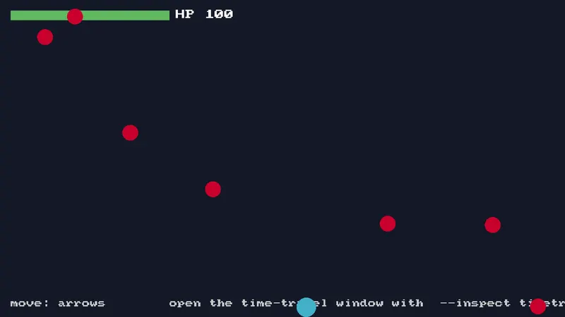
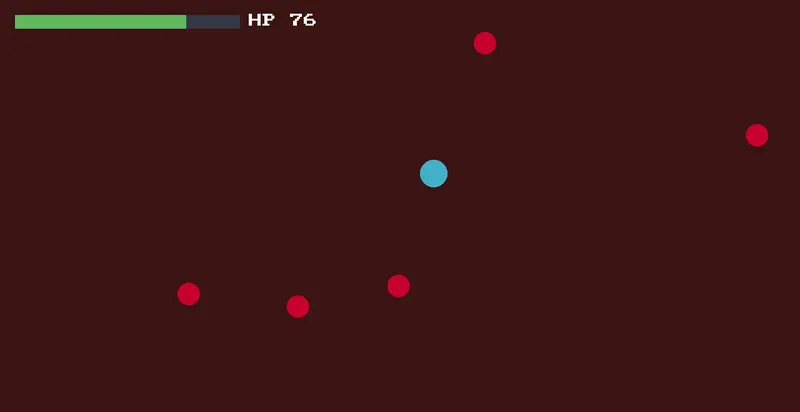

/ engine / story
MitiruEngine ができるまで
自作の C++ ゲームエンジンを、なぜ・どういう考えで作ったのかの記録。エンジンの機能の話はこちらと紹介サイトに書いたので、ここには経緯と気持ちだけを書く。
ゲームと育った
会津大学に入ったのは、自分でゲームを作りたかったからだ。
ゲームは私の半生そのものだった。三兄弟の末っ子だった私のまわりには、兄たちの代から積み上がったゲームハードがあふれていた。ゲームボーイ、アドバンス、DS に PSP。ファミコン、スーファミ、64、ゲームキューブ、Wii。プレステは初代から 4 まで。セガサターンとドリームキャストまであった。実家には数百本のソフトがあって、全部は遊びきれていないけれど、とにかく雑食にいろんなゲームを浴びて育った。
高校で美少女ゲームにはまった。とりわけ『グリザイアの果実』というノベルゲームの松嶋みちるというキャラクターが好きで、その物語に本気で心を動かされた。初めて「遊ぶ側」から「作りたい側」に気持ちが傾いたのもこの頃だ。それで、ゲームを作れる大学に行こうと決めた。
——このエンジンの名前「Mitiru」は、その彼女から取っている。何年も経って自分の道具に名前をつけるとき、迷う理由はなかった。
ちなみにゲームの趣味は今も続いていて、レトロにも手を出している。アルバイトで貯めたお金で、PC-98DA や Windows XP の実機をメイン PC とは別に置いてある。最新のゲームはゲーミング PC で遊ぶので、机の上だけで 40 年ぶんくらいの時代が同居している。
ひどいコードと、完成させた経験
大学ではゲームを作るサークルに入った。周りの人に支えられながら、1 年生の夏に Siv3D という C++ のライブラリで初めてのゲーム制作をした。担当はグラフィックに使うドット絵と、シナリオと、ステージと、マップを読み込んで画面に映すプログラム。腕前はまだまだだったが、ここから少しずつ C++ とゲーム制作を覚えていった。
2 年生の夏、初めてチームリーダーとしてゲームを作った。チームといっても 2 人だ。設計から細部まで 2 人で相談しながら、わからないなりにコードを書いた。いま見返すとひどいものだと思う。スマートポインタというものを知らなかったので生ポインタを使いまくり、解放処理もしていないので、ありえないくらいメモリリークしていた。ゲームは一応完成したが、お披露目する学園祭の当日まで、プレイ途中にクラッシュする不具合を抱えていた。
それでも、設計から完成まで「全部をわからないなりに終わらせた」経験は、後から効いてくる貴重なものだった。完成は何にも勝る教材だと、このとき覚えた。
教える側になって考えたこと
3 年生でゲーム制作部の部長になった。自分がある程度書けるようになると、次に考えるのは「プログラミングの難しさをどう解消するか」「ゲーム制作で脱落してしまう新入生をどう減らすか」になる。
ちょうど部の転換期でもあった。部では数年来 Siv3D を使ってきたが（その前は DxLib だったらしい）、Unity へ移る人がだんだん増えていた。Unity の GUI はよくできていて、初心者にわかりやすい。それは認めざるを得ない。でもずっと Siv3D で書いてきた身としては、少しだけ心寂しかった。C++ でゲームを書ける後輩を育てたい気持ちと、Unity を選ぶ合理性を否定できない気持ちの間で、結局「Siv3D だけを使いなさい」とは言えなかった。いまでは部の最大勢力は Unity で、Siv3D でゲームを作る人はほんの数人になった。
だから部長としての自分の仕事は、C++ での開発をどうわかりやすく教えるか、どうしたらゲームが作りやすくなるか、を考え抜くことだと思った。3 年の夏には、それまで継承だけでやりくりしていた部のコードベースに、Unity 風のコンポーネント指向を持ち込んだ。「動く」「攻撃する」といった振る舞いを巨大な親クラスから引き剥がして、独立した部品としてプレイヤーや敵に持たせるやり方だ。
これは成功だったと言っていいと思う。それまでの巨大な GameObject 親クラスは、わかっている人にしか触れない代物だった。1 年生のときの自分がそうで、設計を気にする余裕などないから、プレイヤーに何かさせたければプレイヤークラスに直接処理を書き足すしかなかった。部品に分けてからは、テンプレートをひとつ渡せば「自分の部品の中だけを見て書く」ことができるようになった。新入生に巨大クラスの説明をしてもぴんとこないが、小さな部品なら通じる。人がつまずく原因の多くは、能力ではなく「一度に視界に入るものの量」なのだと、このとき学んだ。
基盤の方へ
この頃から、ゲームそのものだけでなく、ゲームの下で動いている基盤や、作るための環境を整えること自体に興味が湧いてきた。『DirectX 12 の魔導書』を買って、初めてグラフィック API に触れた。ただゲームを作っていただけの青い理工学生には難しい本で、ChatGPT に意味を聞きながら、時間をかけてサンプルを動かした。すべてを理解したとはとても言えないが、グラフィック API を直接叩いて三角形が出たときの感触は覚えている。
それで、ゲームエンジンを作ろうと思い立った。3 年の秋だった。無謀ではある。ただ、幸か不幸か AI が賢い時代だ。設計に詰まるたびに AI と議論して、失敗モードを列挙させて、それでも決めるのは自分、という作り方で試行錯誤を繰り返した。大学院生になった春、ようやく自分の欲しかった形になった。完成したとは言わない。いまも毎週どこかを直している。
必要なものしか画面に出さない
エンジンのテーマは最初から決まっていた。煩雑な GUI を持たないこと。
Unity で開発していた頃、コードは正しいのにゲームがバグっている、ということが何度かあった。原因を探してインスペクタの設定をあちこち見て回ると、どうやらこのチェックボックスが正しくないとだめらしい、という結論にたどり着く。コードに書いていないものが挙動を決めている。それから、GUI には自分が求めていない情報が常にたくさん映っている。自分にとって GUI のあるツールが難しく感じられるのは、たぶんこれが理由で、Siv3D を好んで使ってきたのも同じ理由だ。
部長時代に学んだ「人がつまずくのは視界に入るものの量」という話と、これは同じことだと思っている。だから MitiruEngine は全部入りのエディタを持たない。道具は 1 つにつき 1 ウィンドウ、ふだんは何も開かない、操作はコマンドから。ゲームの挙動を決めるものはコードとデータだけにして、隠れた設定を作らない。
それから、どうせ自分のエンジンなのだから、自分が一番欲しかった機能を入れようと思った。ホットリロードと、ゲームの巻き戻しだ。数字をひとつ変えて手触りを確かめるのに、ビルドして起動して同じ場面まで進める、という往復を何百回もやってきた。コードを保存したら動いているゲームにそのまま反映されて、バグの瞬間には時間を巻き戻して立ち会えるなら、ゲーム作りはもっと気持ちのいい遊びになるはずだった。


この 2 つを本気で成立させようとすると、設計がひとつの答えに収束していく。ゲームの状態を、ポインタも仮想関数も持たない 1 個のかたまり（flat POD）として持つことだ。状態がただのバイト列なら、コードを差し替えても状態は生き残るし、毎フレーム保存しておけば巻き戻せるし、入力と一緒に記録すればプレイを丸ごと再生できるし、ファイルに書けばそのままセーブデータになる。欲しかった 2 つの機能を追いかけていたら、録画再生もセーブも観測も、全部が同じひとつの仕組みから生えてきた。エンジンを作っていて一番うれしかったのは、この瞬間だったと思う。
これから
エンジンは目的ではなく足場だ。いまはこのエンジンの上で、昔作ったノベルゲームの移植や、新しいゲームをいくつか作っている。ゲームを作るとエンジンの足りないところが見つかり、エンジンを直すとゲームが作りやすくなる。この往復が、いまの自分にとって一番おもしろい遊びになっている。
机の上には今日も、PC-98 と最新のゲーミング PC が並んでいる。40 年ぶんのゲームに育てられた人間が、次の誰かが遊ぶものを作る側に回る。それだけの話を、これからも続けていくつもりだ。